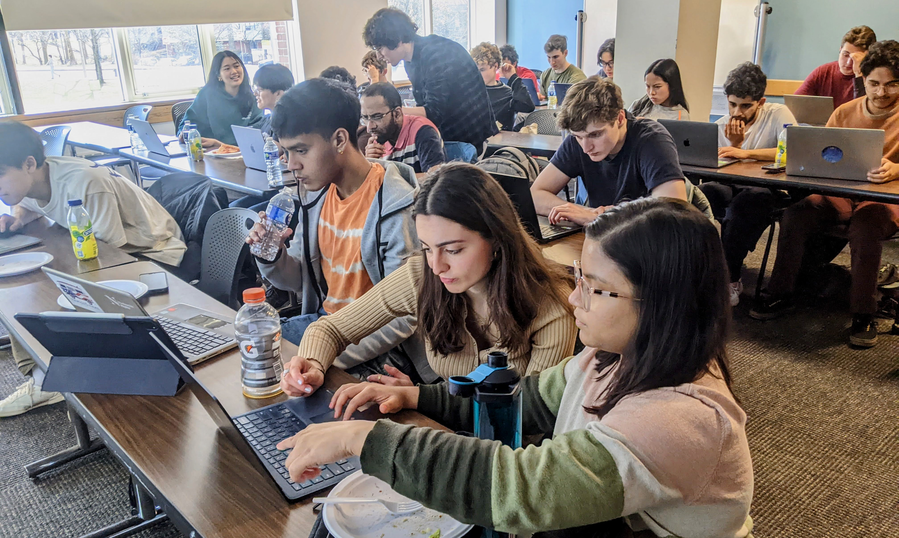

{header()}
<main>

<div class="container col-xxl-8 px-5 px-lg-0 py-5">
  <div class="row align-items-center">
    <p>
      <a class="btn btn-outline-secondary rounded-pill"
      href="./start.html">Click here for free remote access to Llama 3.1, DeepSeek R1, & more!
      </a>
    </p>

  </div>
</div>


<div class="container col-xxl-8 px-5 px-lg-0">
  <div class="row align-items-center">
    <h1 class="display-5 fw-bold text-body-emphasis lh-1 mb-3">Get Involved</h1>
    <p>
    NDIF is under continuous development, and there are several ways to get involved
    in the prototype fabric during its construction.
    <ul class="px-5"t pus>
      <li><a href="/signup.html">Join our community of early adopters.</a>
        Our Discord server hosts
        students and researchers from many fields who are dissecting the
        behavior and mechanisms of large AI models.  
      <li><a href="https://nnsight.net/about">Use our open-source library, NNsight.</a>
        NNsight can be used with NDIF
        and it can also be used with your own local computational power
        independently of the fabric.  It works with PyTorch and can be
        easily installed via <kbd>pip</kbd>.
      <li><a href="#jobs">Join our team.</a>
        We are looking for talented and motivated team
        members who are inspired to create a vibrant scientific community to
        crack the mysteries of large-scale AI. Jobs and opportunities are listed
        on this page.
    </ul>
    </p>
    <p>
    The NDIF project code is open-source and can be found at
    <a href="https://github.com/orgs/ndif-team/repositories">github.com/ndif-team</a>.
    </p>
  </div>
</div>

<section class="col-xxl-8 px-5 px-lg-0 py-5 text-center container border-top">
<div class="row">
<div class="col-md-4 text-start">
  <br>
  <p>
    An NDIF workshop for undergraduate and graduate students, using NDIF to explore state-of-the-art methods for performing 
    interventions on the internal computations of large language models.  
    NDIF enables students and scientists to share GPU resources to learn, develop, 
    and deploy scientific methods that crack open the internals of large neural networks.
  </p>
</div>

<div class="col-md-8 pt-3 text-start">

</div>

</div>
</section>


<section class="col-xxl-8 px-5 px-lg-0 py-5 text-center container border-top">
<div class="row">

<div class="col-md-4 text-start">
<div class="card bg-body-secondary p-4">
<div class="card-body">
<h5 class="card-title">NDIF Community</h5>
<p class="card-text">On the NDIF community Discord, you can chat with the team
and discuss tips, tricks, and the latest research. Submit a short form to join.
</p>
<a href="./signup.html" class="btn btn-primary">Join the group</a>
</div>
</div>
</div>

<div class="col-md-4 text-start">
<div class="card bg-body-secondary p-4">
<div class="card-body">
<h5 class="card-title">NNsight</h5>
<p class="card-text">If you're ready to start cracking open large neural networks, 
  NDIF and NNsight are ready for use! Just a <kbd>pip install nnsight</kbd> away. Get started here.
</p>
<a href="./start.html" class="btn btn-primary">Get started</a>
</div>
</div>
</div>

<div class="col-md-4 text-start">
<div class="card bg-body-secondary p-4">
<div class="card-body">
<h5 class="card-title">Jobs</h5>
<p class="card-text">We would love your help building NDIF.
To join the NDIF team full-time, part-time, as a
co-op or a volunteer, see our job listings on this page.
</p>
<a href="#jobs"><span
  class="btn btn-primary"
data-bs-toggle="collapse"
data-bs-target="#flush-collapseOne"
                >See jobs below</span></a>
</div>
</div>
</div>

</div>
</section>


<section class="col-xxl-8 px-5 px-lg-0 py-5 mb-5 container">

<div class="border-bottom pb-3">
<h1>Jobs and Community Opportunities</h1>
</div>
  <p>
    We don't currently have any open roles, but please check back later for future job openings. 
  </p>

<div class="accordion accordion-flush" id="accordionFlush">

<div class="accordion-item">
<h2 class="accordion-header">
<button class="accordion-button collapsed" type="button" data-bs-toggle="collapse"
data-bs-target="#flush-collapseOne" aria-expanded="false" aria-controls="flush-collapseOne">
<h6 style="margin-bottom: 0 !important;">Join our Pilot Program</h6>
</button>
</h2>
  <div id="flush-collapseOne" class="accordion-collapse collapse" data-bs-parent="#accordionFlush">
    <div class="accordion-body">
      <p>
      As we continue building our platform, we are offering a unique opportunity 
      for AI researchers to conduct groundbreaking experiments on the Llama-3.1-405b model 
      while helping to test new research infrastructure. We are pilot-testing a 
      programming interface that provides terabytes of GPU resources and the system support 
      necessary to conduct experiments on models of this size. We are seeking innovative 
      minds to help us test our new computational fabric while advancing their research
      in AI.
      </p>
      <p>
      <a href="/405b.html">Apply today!</a>
      </p>
    </div>
  </div>
</div>

<div class="accordion-item">
<h2 class="accordion-header">
<button class="accordion-button collapsed" type="button" data-bs-toggle="collapse"
data-bs-target="#flush-collapseTwo" aria-expanded="false"
aria-controls="flush-collapseTwo">
<h6 style="margin-bottom: 0 !important;">
  <a name="jobs">Other roles</a></h6>
</button>
</h2>
<div id="flush-collapseTwo" class="accordion-collapse collapse" data-bs-parent="#accordionFlush">
<div class="accordion-body">
  <p>
  We anticipate hiring for the following roles in the future:
  <ul>
    <li>Student research assistants.
    <li>Student co-ops.
  </ul>
  </p>
  <p>
  We also welcome research collaborators and unpaid open-source contributors; for
  open-source community opportunities, get in touch through our <a href="./signup.html">community Discord</a>.
  </p>
</div>
</div>
</div>

</section>

</main>
{footer()}
